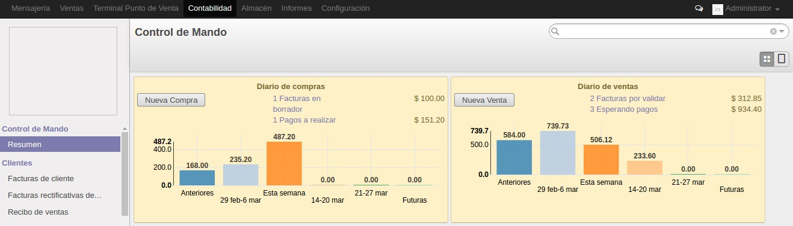

<section class="oe_container">
    <div class="oe_row oe_spaced">
        <div class="oe_span12">
            <h2 class="oe_slogan">Odoo Invoice Dashboard V8</h2>
            <h3 class="oe_slogan">This module allows you to display weekly charts as in the version 9 of Odoo.</h3>
        </div>
        <div class="oe_span12">
            <p class="oe_mt32">
This module depend the free module <a href="https://apps.odoo.com/apps/modules/8.0/web_kanban_graph/">Graph Widget for Kanban</a>
            </p>
        </div>
        <div class="oe_span12">
            <div class="oe_demo oe_picture oe_screenshot">
                    
            </div>
        </div>
    </div>
</section>